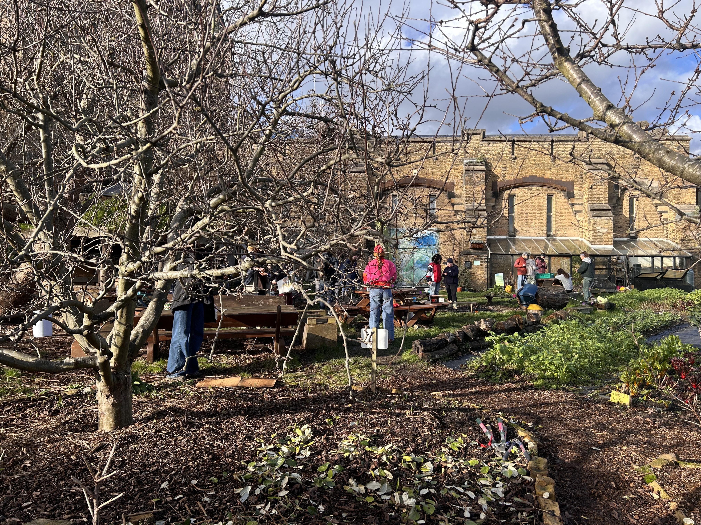

Edward Walker
hello[at]edward-walker[dot]com
A London-based digital communicator and geographer with a growing interest in the relationship between human and natural environments. Also a member of London's
Work:

Recent Voluntary Work:

Courses:
Formal Education: